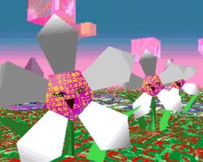

Created: January 1st, 1983
Director: Cecelia Condit
WARNING: Violence / Cannibalistic themes
This video is relatively popular on youtube and has been, and is an art piece by Cecelia that talks about cannibalistic men that are preying on woman as they fight back.
Created: 2016
Creator: Yo-Yo Baby Bingo
This is a more obscure song created by an artist by the name of Yo Yo Bingo. It's accompanied by an image from the game LSD Dream Emulator, a game created in 1998 by Ossamu Sato.
Created: October 16, 2016
Creator: PiroPito
WARNING: Blood / Psychological horror
My house walk-through is a video depicting a man going through an endless loop as a storm is outside, he shows us his house degrade and rot overtime, not realizing what is happening.